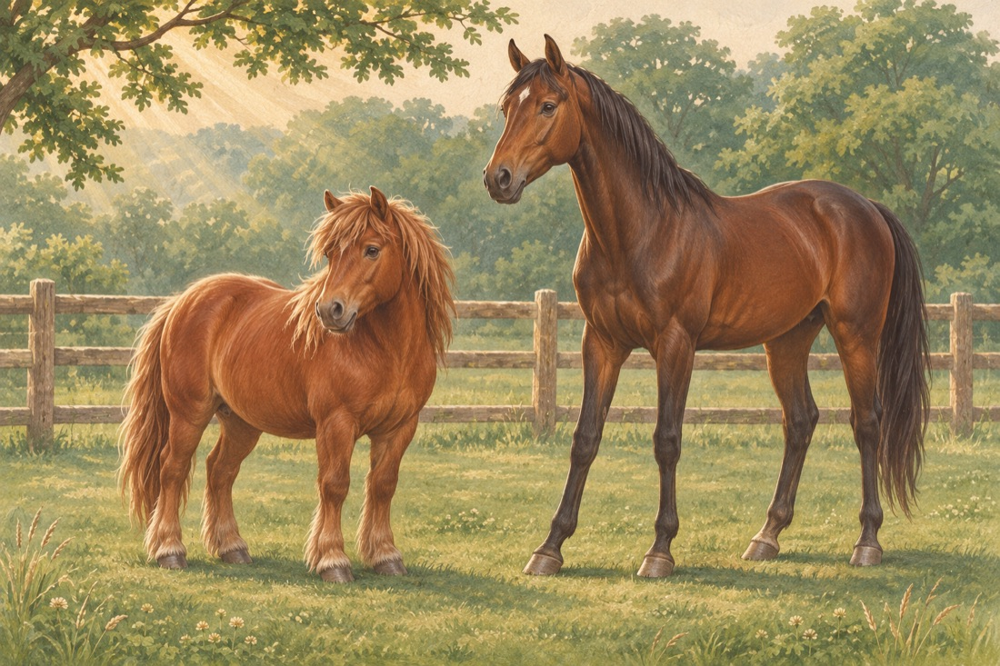

Featured guide
Do ponies behave differently from horses?
Size tells you how tall an animal is. Getting to know the individual tells you much more about how it might act.
Read the guideStart with the everyday ways people care for horses, from brushing a coat to checking a hoof.

Featured guide
Size tells you how tall an animal is. Getting to know the individual tells you much more about how it might act.
Read the guideFind out what a hoof check is and what a farrier does.
Read guideA brush can lift dust and help you notice how a horse is feeling.
Read guideLearn what horses eat in a pasture and why grazing time can vary.
Read guideSee what goes into a wash and why the weather matters.
Read guide